This function generates a lollipop plot based on the results of a MaAsLin2 or DESeq2 analysis to visualize the differential abundance of microbial gene families or pathways (features) associated with specific categorical variables. It only includes significant features with a q-value < 0.05 (for MaAsLin2) or a p-adjusted value < 0.05 (for DESeq2).
Arguments
- da_result
A tibble containing the result of the differential analysis.
- n
Maximum number of significant associations to be displayed on the plot in ascending order of q-value (for MaAsLin2) or p-adjusted value (for DESeq2).
Details
The x-axis represents the coefficient/effect size (for MaAsLin2) or log2FoldChange (for DESeq2) of each feature, indicating the magnitude and direction of change associated with the chosen categorical variable. The y-axis represents the features ordered by their coefficient values (for MaAsLin2) or log2FoldChange (for DESeq2).
Each feature is depicted as a line segment originating from the origin (0 on the x-axis) and extending to the corresponding coefficient/log2FC value on the x-axis. Negative coefficient/log2FC values indicate a decrease in abundance, while positive ones indicate an increase in abundance. The color of each feature segment is determined by the statistical significance of the differences, represented by a color gradient scale using the negative logarithm of p-values.
Examples
# Def data paths
metadata <- system.file("extdata", "ex_meta.csv", package = "microfunk")
file_path <- system.file("extdata", "All_genefam_cpm_kegg.tsv", package = "microfunk")
# Read HUMAnN3 & MaAsLin2 Analysis
da_result <-
read_humann(file_path, metadata) %>%
run_maaslin2(fixed_effects = "ARM")
# Lollipop Plot
plt_lollipop(da_result, n = 20)
#> ! Features present in all methods are greater than the cutoff n = 20
#> ℹ The top 20 significant features will be used
